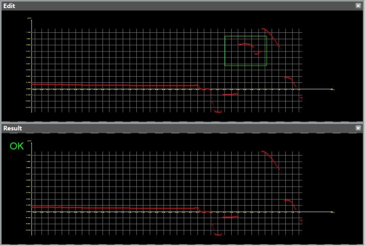

轮廓线内点分割工具的主要功能是去除到基准线的距离大于距离阈值的轮廓点，保留在距离阈值范围之内的点。如下图，基准线为X轴，距离阈值0.05，结果如下图所示。

| 分类 | 参数名称 | 参数描述 |
|---|---|---|
| 属性窗口 | ROI类型 | 待检测区域，分为4种：整幅图像、矩形、仿射矩形、多仿射矩形。 |
| 仿射矩形ROI个数 | 仅在ROI类型为多仿射矩形时有效，用于指定仿射矩形的个数，取值范围[2,10]。 | |
| 是否包含 | 选择“是”，则去除到基准线的距离大于距离阈值的轮廓点，保留在距离阈值范围之内的点；选择“否”，则相反，保留到基准线的距离大于距离阈值的轮廓点，去除在距离阈值范围之内的点。 | |
| 距离阈值 | 轮廓点到基准线的距离。 | |
| 图像窗口 | 轮廓图像 | 显示输入的轮廓图像。 |
| 检测区域 | 在图像上显示待检测区域。 | |
| 数据链 | 输入轮廓数据 | 输入待检测的轮廓数据，该参数可来源于截面生成工具。 |
| 二维线性变换 | 目标相对于模板的平移、旋转、缩放变换。 | |
| 高级界面 | 无 | 无 |
| 分类 | 参数名称 | 参数描述 |
|---|---|---|
| 监视窗口 | 输出轮廓数据 | 输出的轮廓数据，包括轮廓点数，有效点数。 |
| 执行结果 | 工具执行结果。 | |
| 执行时间 | 工具执行时间。 | |
| 图像窗口 | 输出轮廓数据 | 显示检测后的轮廓图像。 |
| 数据链 | 同监视窗口参数，供后续工具使用。 |
无
无
参见“\Samples\3D\深度图\轮廓线内点分割工具.gvp”。